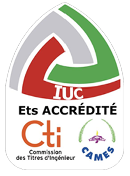
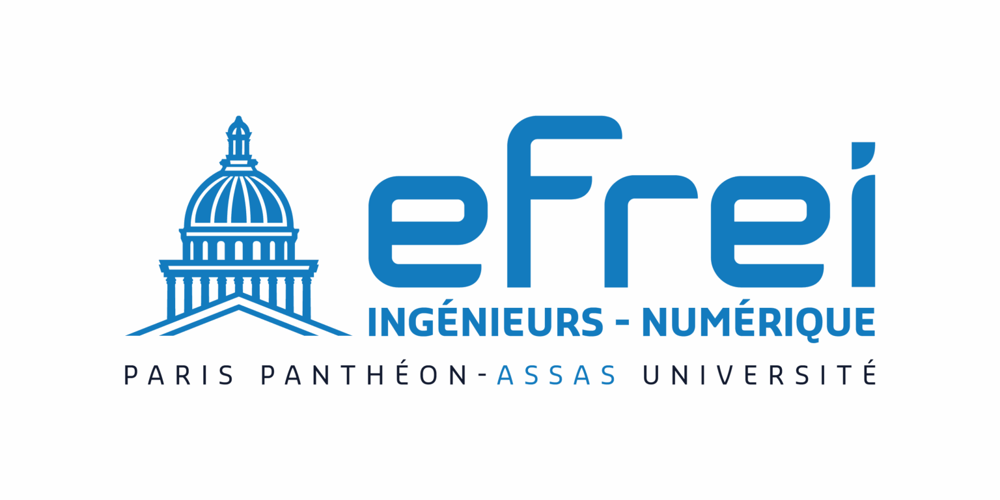
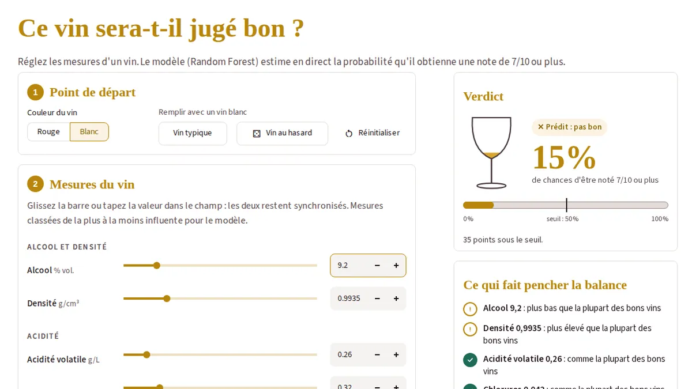
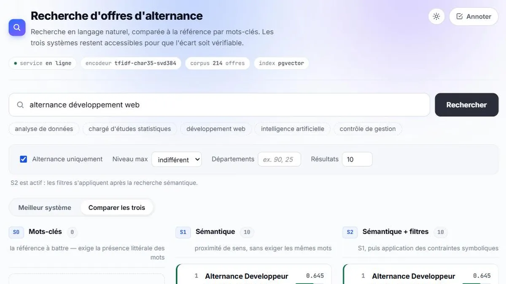
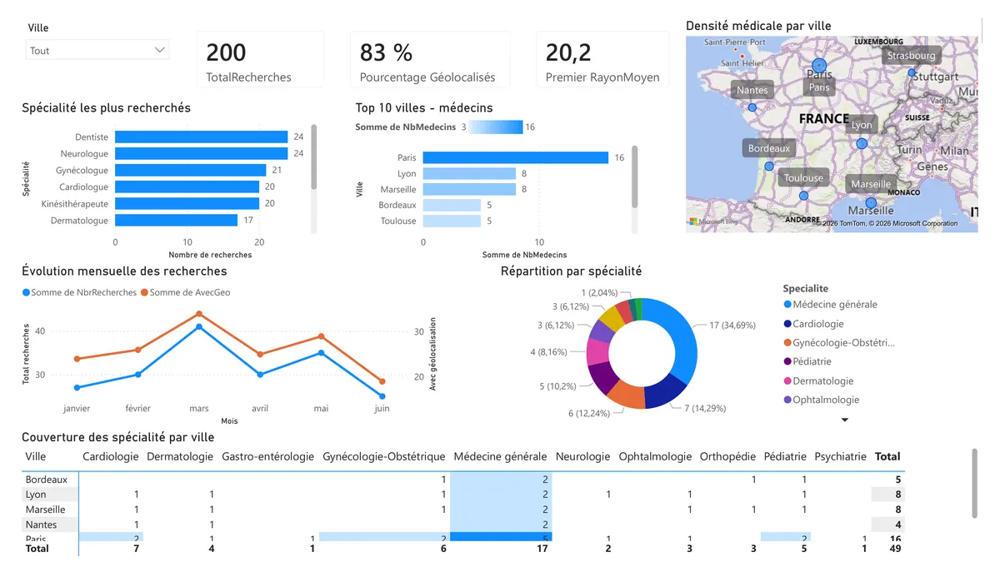

Lecture
Nourrir ma curiosité au-delà de la technique et apprendre autrement.
Disponible immédiatement en alternance
Élève ingénieure Data et IA · Big Data et Machine Learning
Je transforme des données en décisions : pipelines fiables, tableaux de bord utiles au métier et modèles de Machine Learning évalués avec rigueur.
Étudiante en 2e année du cycle ingénieur à l’EFREI Paris, je me spécialise en Data et Intelligence Artificielle. Curieuse et déterminée, je monte vite en compétence sur des environnements exigeants : Python, SQL et NoSQL pour explorer, valoriser des données complexes et automatiser des processus.
J’ai mené des projets data de bout en bout, de la collecte des données jusqu’à l’application en ligne, en mesurant honnêtement ce qu’ils valent. Je veux maintenant relever de vrais enjeux métier aux côtés d’experts.
Collecte, nettoyage, modélisation et mise à disposition des données.
Des KPI pensés pour le métier, avec Power BI et DAX.
Machine Learning, recherche sémantique et agents, jugés sur des métriques.
De Douala à Paris, trois écoles en quatre ans, avec des résultats à chaque étape.
Français natif · Anglais C1 (TOEIC 955/990)
Ma boîte à outils, de la collecte de la donnée jusqu’au modèle.
De Douala à Paris, chaque étape m’a rapprochée de la Data et de l’IA.

Tout commence à l’IUC, en classes préparatoires filière Ingénierie. Deux années d’algèbre linéaire, d’analyse numérique et de probabilités, où j’apprends la rigueur et l’endurance face aux problèmes difficiles.
Entre les deux années, un stage chez Sparte Robotics me fait toucher du doigt la donnée en temps réel. Et à l’arrivée, une belle récompense :
Cap sur la France et l’UTBM pour ma première année de cycle ingénieur. L’intelligence artificielle y devient concrète : logique des prédicats, satisfaction de contraintes, agents intelligents.
J’y découvre aussi le monde des données en entreprise, avec l’administration de bases et les systèmes d’information. En parallèle, je rejoins la Junior UTBM comme chargée d’étude de projet.

Aujourd’hui, j’écris la suite à l’EFREI Paris, en cycle ingénieur par alternance, spécialisation Big Data et Machine Learning.
Deep Learning, MLOps, cloud, LLM et IA générative : j’assemble les outils pour passer de la donnée brute à des modèles utiles. Il me manque une chose, l’entreprise où les mettre au service de vrais enjeux.
Alternance en Data et IA, disponible dès maintenant.
Deux expériences, puis six projets classés par pertinence Data. Chaque carte donne l’essentiel ; ouvrez le détail pour le contexte, l’action et le résultat.
Sparte Robotics, Douala · robotique et systèmes embarqués
Junior UTBM, Belfort
Projet EFREI en binôme · application en ligne

Projet personnel · version 1 fonctionnelle, évaluation chiffrée en cours

Projet en équipe de 4 · mon périmètre : recherche géolocalisée, rendez-vous et dashboards Power BI

Projet en équipe · mon rôle : conception des règles Prolog et de l’heuristique, intégrées par le développeur principal
Réalisé pendant mon stage chez Sparte Robotics · code non public
Projet de la matière IHM, en équipe · rôle hybride : coordination et conception · pour les 10 – 12 ans
Data, IA et projets d’ingénierie
Chiffres et dépôts chargés en direct depuis GitHub.